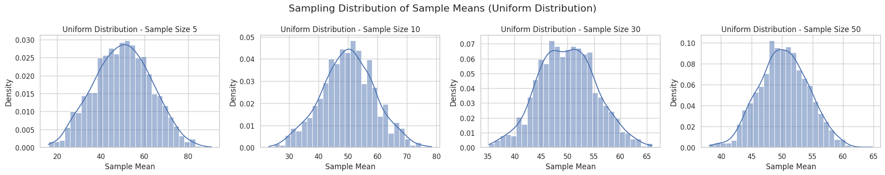
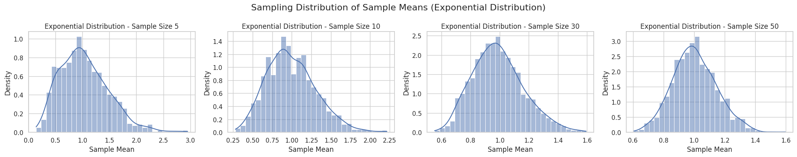
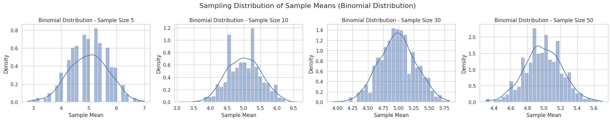

Problem 1
Central Limit Theorem - Motivation The Central Limit Theorem (CLT) states that regardless of the shape of the population distribution, the sampling distribution of the sample mean will approximate a normal distribution as the sample size becomes large enough.
Key Points:
Works for any original distribution (uniform, exponential, binomial, etc.).
The rate of convergence depends on the sample size and the population’s variance.
- Simulating Sampling Distributions We will use 3 types of population distributions:
Uniform distribution (evenly spread)
Exponential distribution (skewed right)
Binomial distribution (discrete distribution)
For each distribution:
Generate a large "population" (size = 100,000).
Sample different sample sizes (5, 10, 30, 50).
Repeat 1000 times per sample size. 2. Python Code
```python import numpy as np import matplotlib.pyplot as plt import seaborn as sns
Set style
sns.set(style="whitegrid")
Define population sizes and sample sizes
population_size = 100_000 sample_sizes = [5, 10, 30, 50] repeats = 1000
Function to create sampling distribution
def sampling_distribution(population, sample_size, repeats): means = [] for _ in range(repeats): sample = np.random.choice(population, size=sample_size, replace=False) means.append(np.mean(sample)) return means
Function to plot sampling distributions
def plot_sampling_distributions(population, pop_name): fig, axes = plt.subplots(1, len(sample_sizes), figsize=(20, 4))
for idx, size in enumerate(sample_sizes):
sample_means = sampling_distribution(population, size, repeats)
sns.histplot(sample_means, kde=True, ax=axes[idx], stat="density", bins=30)
axes[idx].set_title(f"{pop_name} - Sample Size {size}")
axes[idx].set_xlabel("Sample Mean")
axes[idx].set_ylabel("Density")
fig.suptitle(f"Sampling Distribution of Sample Means ({pop_name})", fontsize=16)
plt.tight_layout()
plt.show()
  
- Parameter Exploration Observations: Uniform distribution: Already somewhat symmetric. Converges quickly to normality even with small sample sizes.
Exponential distribution: Highly skewed. Needs larger sample sizes (around 30–50) for the sample mean distribution to become approximately normal.
Binomial distribution: Symmetric when p ≈ 0.5. Convergence is faster compared to skewed distributions.
Impact of Population Variance: Populations with higher variance (like exponential) cause the sampling distribution to be wider (more spread out).
Larger sample sizes reduce the spread (standard error decreases as 1/ √n )
- Practical Applications Why is the CLT important?
Estimating population parameters: Enables us to use the normal distribution for confidence intervals even if the population isn't normal.
Quality control: Detects anomalies in manufacturing processes by looking at averages.
Finance: Predicts returns or risks by aggregating lots of small random events.